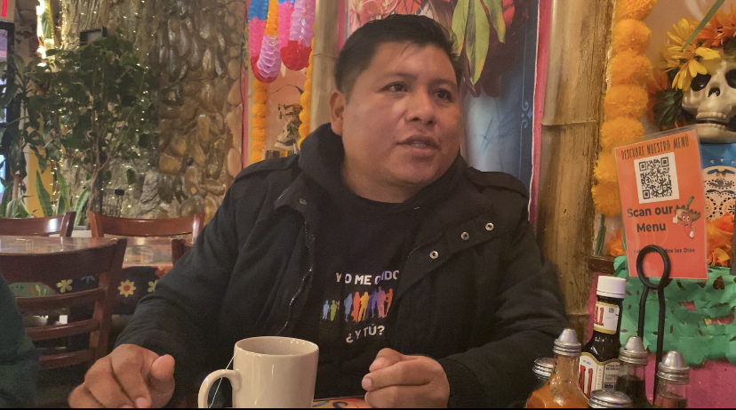

La lucha de los migrantes indígenas latinoamericanos por conseguir una forma de vida
La discriminación, el abuso laboral y la falta de servicios de traducción pueden condicionar sus posibilidades de obtener oportunidades económicas y académicas, según activistas.
Por Eduardo González | 15 de noviembre de 2022
Lee en Español
La diáspora indígena latina de NYC tiene un 30% menos de posibilidades de acceder a las condiciones económicas básicas, según un estudio publicado por el Departamento de Salud de la Ciudad.
La investigación muestra una relación entre el nivel de inglés y el ingreso económico familiar, algo que para Próspero Martínez, migrante de la comunidad Mixe de Oaxaca, tiene que ver con el abuso laboral.
"Muchas veces en los restaurantes o lugares mexicanos no nos pagan el salario mínimo, pagan 10, 12 dólares la hora. Es un abuso".
Próspero Martínez
Migrante Indígena de la Comunidad Mixe
Sin embargo, seguir una carrera profesional tampoco es una opción, ya que sólo el 26,7% de los miembros de las comunidades indígenas tiene acceso a la educación universitaria.
Daniel Kaufman (PhD. CUNY), en su trabajo "Surveying Indigenous Latin American Languages in NYC", afirma que este retraso se debe a que "a menudo permanecen dispersos, invisibles y sin acceso a los servicios, incluida la traducción". ”.